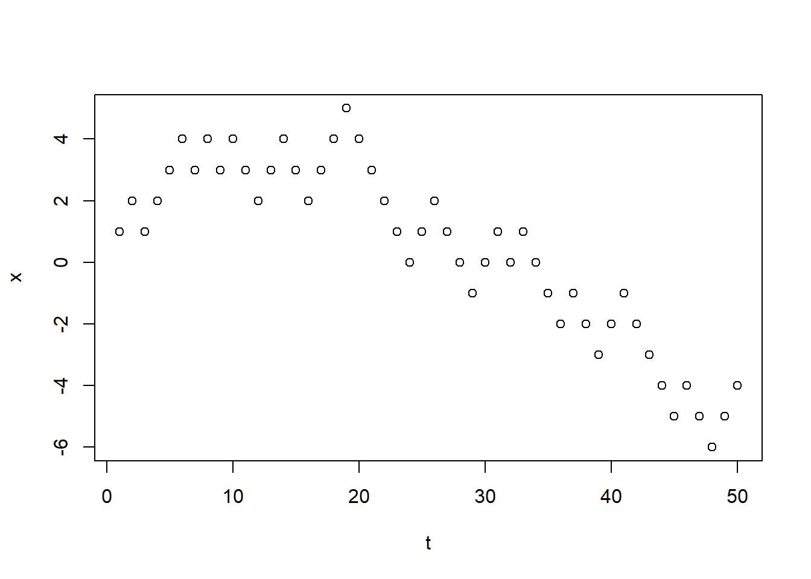
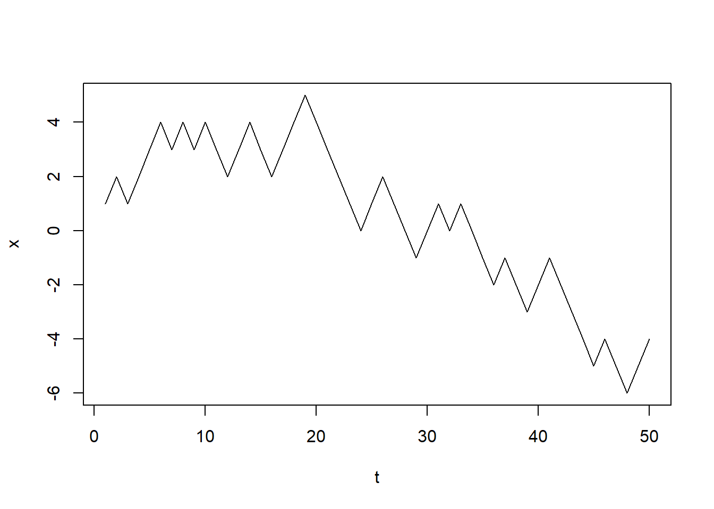
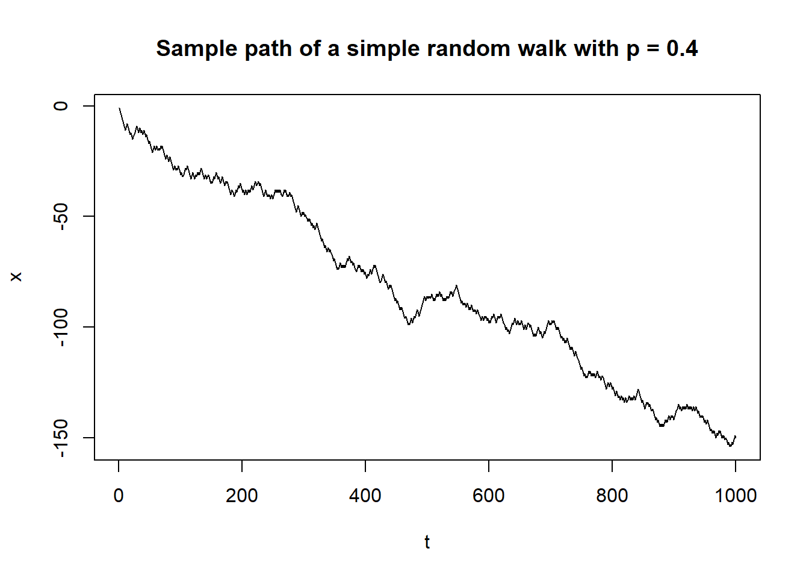

1+2[1] 3\[ \renewcommand{\P}{\mathbb{P}} \newcommand{\E}{\mathbb{E}} \]
Links
R is a programming language widely used for statistical computing, (big) data analysis, machine learning, and other areas aimed to retrieve, clean, analyze, visualize, and present data.
It is a standard (often, default) tool for statisticians, actuaries, biologists, and many others. R is free software, you can download it from www.r-project.org Links to an external site.and install on your computer/laptop (Windows/Mac OSX/Linux).
RStudio Links to an external site.is an Integrated Development Environment (IDE) for R that includes various tools for effective and comfortable work with R.
You can download the free version of RStudio Desktop from www.rstudio.com
Arithmetic operations
1+2[1] 3or
2*3[1] 62/3[1] 0.6666667Vectors
c(...):c(1,2,3,4,5)[1] 1 2 3 4 5<- instead of = for the assigning (though the latter will not lead to a mistake in the most of cases). The RStudio shortcut for this is “Alt -”.a <- c(1,2,3,4,5) 2*a[1] 2 4 6 8 10b <- c(10,15,20,25,30)then
a*b[1] 10 30 60 100 150a^2[1] 1 4 9 16 25Defining vectors
seq(7,94) [1] 7 8 9 10 11 12 13 14 15 16 17 18 19 20 21 22 23 24 25 26 27 28 29 30 31
[26] 32 33 34 35 36 37 38 39 40 41 42 43 44 45 46 47 48 49 50 51 52 53 54 55 56
[51] 57 58 59 60 61 62 63 64 65 66 67 68 69 70 71 72 73 74 75 76 77 78 79 80 81
[76] 82 83 84 85 86 87 88 89 90 91 92 93 94seq:seq(7,94,2) [1] 7 9 11 13 15 17 19 21 23 25 27 29 31 33 35 37 39 41 43 45 47 49 51 53 55
[26] 57 59 61 63 65 67 69 71 73 75 77 79 81 83 85 87 89 91 93or
seq(1,10,0.2) [1] 1.0 1.2 1.4 1.6 1.8 2.0 2.2 2.4 2.6 2.8 3.0 3.2 3.4 3.6 3.8
[16] 4.0 4.2 4.4 4.6 4.8 5.0 5.2 5.4 5.6 5.8 6.0 6.2 6.4 6.6 6.8
[31] 7.0 7.2 7.4 7.6 7.8 8.0 8.2 8.4 8.6 8.8 9.0 9.2 9.4 9.6 9.8
[46] 10.0rep function:rep(1,10) [1] 1 1 1 1 1 1 1 1 1 1Summation
sum:a <- seq(1,10)
b <- sum(a)
b[1] 55i.e. \(a=(a_1,\ldots,a_{10})=(1,2,\ldots,10)\) and
\[ b = \sum_{i=1}^{10} a_i \]
a <- seq(1,10)
c <- cumsum(a)
c [1] 1 3 6 10 15 21 28 36 45 55i.e. \(c =(c_1,\ldots,c_{10})\), where
\[ c_i = \sum_{k=1}^i a_k. \]
Let \(X\) be the random variable that is the result of throwing a (fair) dice, i.e. \(X\) may take either of values \(1,2,3,4,5,6\) with equal probabilities \(\frac16\).
Define vector \[
x=(x_1,x_2,\ldots,x_6)=(1,2,\ldots,6)
\] of values of \(X\) and assign it to R-variable x.
Define vector \[
p=(p_1,p_2,\ldots,p_6)=\Bigl(\frac16,\frac16,\ldots,\frac16\Bigr)
\] of the probabilities, and assign it to R-variable p.
Recall that the expectation of \(X\) is \[ \E(X)=\sum_{i=1}^6 x_ip_i=x_1p_1+\ldots x_6p_6=x\cdot p. \] Calculate \(\E(X)\).
Check the answer.
[1] 3.5Recall that the variance of a random variable can be found by the following formulas: \[ \begin{aligned}\mathrm{Var}(X) &= \mathbb{E}\Bigl(\bigl(X-\mathbb{E}(X)\bigr)^2\Bigr)\\ &= \sum_{i=1}^6 \bigl(x_i-\mathbb{E}(X)\bigr)^2p_i\end{aligned}. \] Find \(\mathrm{Var}(X)\).
Check the answer:
[1] 2.916667sample.It has arguments x representing the state space (all possible values; note that the name of the argument is x regardless of the notation for the variables); prob representing the corresponding probabilities; size that is the number of the generated random variables, and replace that should be setup equal to TRUE or just T.
n <- 10
z <- sample(x=c(-1,1),prob=c(1/2,1/2),size = n, replace = T)
z [1] 1 -1 -1 1 1 1 -1 1 1 -1z may change:z <- sample(x=c(-1,1),prob=c(1/2,1/2),size = n, replace = T)
z [1] -1 1 1 -1 -1 -1 -1 -1 1 1set.seed(N) at the beginning of the code, where N is an arbitrary natural number.Consider now the simple symmetric random walk: \[ X_0=0, \qquad X_n=\sum_{i=1}^n Z_i. \]
Vector \(X=(X_1,\ldots,X_n)\) can be then obtained using cumsum function.
Set set.seed(100) and choose \(n=50\). Get vector \(X\).
Check its \(48\)-th component:
x[48][1] -6Find the distance from \(X_{50}\) to the origin, using function abs.
Check the answer.
[1] 4plot functiont <- 1:n
plot(t,x)
plot(t,x,type='l')
SimpleRW <- function(p,n)
{
z <- sample(x=c(-1,1),prob=c(1-p,p),size = n, replace = T)
x <- cumsum(z)
t <- 1:n
plot(t,x,type='l',main=paste("Sample path of a simple random walk with p =",p))
}Note that here \(\mathbb{P}(X=1)=p\), \(\mathbb{P}(X=-1)=1-p\). Also I tweaked plot command to include the used value of \(p\) in the title of the diagram (you may ignore main=... part).
Plot two graphs of \(X_t\) for \(t\in\{1,\ldots,1000\}\): for \(p=0.4\) and for \(p=0.6\).
Compare the output (your graphs do not need to be aligned in the same line):


One can see the trend: in the first case, the probability \(q=1-p\) that \(Z=-1\) is smaller hence process \(X_n\) will go down more often.